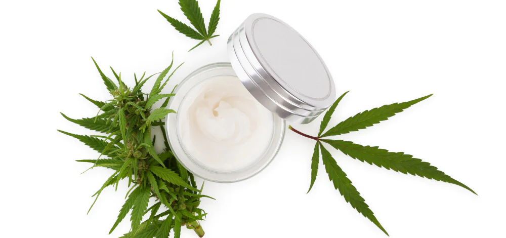

Cannabis
Esta planta como uso medicinal tiene muchos beneficios, es usada para tratar o aliviar algunas enfermedades o determinados síntomas
Crema de Cannabis
la crema posee propiedades calmantes y regeneradoras, aporta una gran hidratacion. El resultado es una piel mas luminosa y unifirme.

Aceite de Cannabis
El aceite de CBD tiene principalmente cannabidiol, que no es psicoactivo y es muy útil en los casos de epilepsia. El aceite THC tiene mayor concentración de THC, que es psicoactivo pero es útil para aumentar el apetito, aliviar dolores y los malestares de la quimioterapia (náuseas, vómitos, etc.).

Jabon de Cannabis
El jabón de cannabis tiene muchas propiedades como: anti-edad ya que contribuye en la regeneración y oxigenación de las células, anti-inflamatoria gracias a su poder antioxidante calmará, suavizará y curará problemas dérmicos, hidratante luce una piel sana y luminosa gracias a sus aceites naturales, anti-acné